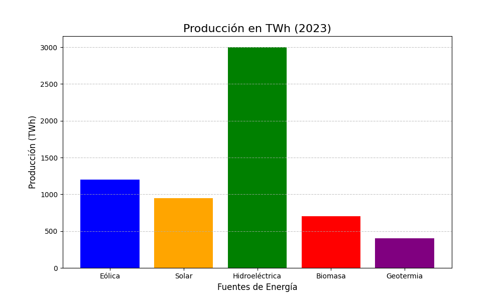
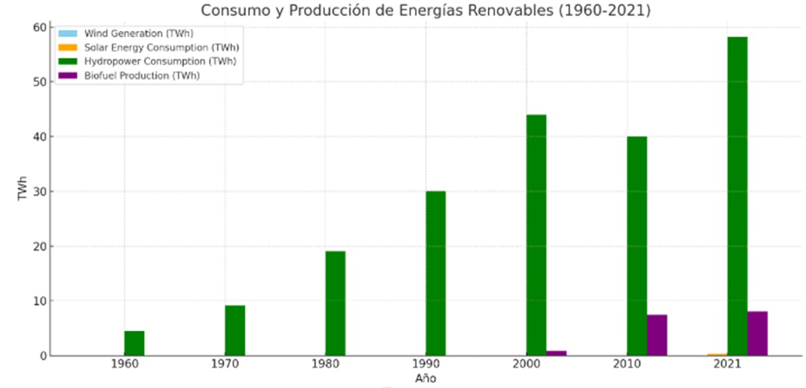
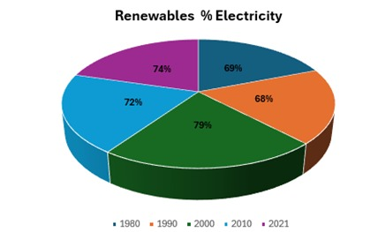

Un análisis global sobre la evolución de las energías limpias y su impacto en la descarbonización.
La Energía Solar: Una Fuente de Energía Limpia e Inagotable ¿Qué es la energía solar? La energía solar es aquella que obtenemos directamente del Sol. Es una forma de energía renovable, lo que significa que proviene de una fuente inagotable y natural. A diferencia de los combustibles fósiles, la energía solar no produce gases de efecto invernadero, lo que la convierte en una opción mucho más limpia y sostenible. ¿Cómo funciona? Existen dos formas principales de aprovechar la energía solar: Energía solar fotovoltaica: En este caso, los paneles solares transforman directamente la luz del sol en electricidad. Esta electricidad puede ser utilizada para alimentar hogares, empresas o incluso redes eléctricas. Energía solar térmica: Aquí, el calor del sol se utiliza para calentar agua o aire, que a su vez puede ser utilizado para calefacción, producción de agua caliente sanitaria o generación de electricidad. Ventajas de la energía solar: Costos iniciales: La inversión inicial para instalar un sistema solar puede ser alta, aunque los costos están disminuyendo con el tiempo. Dependencia del clima: La producción de energía solar varía según la cantidad de sol disponible. Almacenamiento: Almacenar la energía solar para su uso nocturno o en días nublados puede ser costoso. El futuro de la energía solar: La energía solar está experimentando un crecimiento exponencial en todo el mundo. Gracias a los avances tecnológicos y a las políticas de apoyo a las energías renovables, cada vez más personas y empresas están optando por la energía solar. Se espera que en los próximos años esta tendencia continúe, convirtiendo a la energía solar en una de las principales fuentes de energía a nivel global.
Ha aumentado un 20% en los últimos 5 años en países como China y Estados Unidos.
¿Qué es la energía eólica? La energía eólica es aquella que obtenemos del viento. Al igual que la energía solar, es una fuente de energía renovable, lo que significa que proviene de un recurso inagotable y natural. El viento mueve grandes aspas conectadas a un generador, que a su vez produce electricidad. ¿Cómo funciona? Aerogeneradores: Estos son los molinos de viento modernos. Las aspas capturan la energía cinética del viento y la transmiten a un eje. Generador: El eje hace girar un generador eléctrico, que convierte la energía mecánica en energía eléctrica. Transmisión: La electricidad producida se transmite a través de líneas eléctricas hasta los hogares y las industrias. Ventajas de la energía eólica: Desafíos: Intermitencia: La producción de energía eólica depende de la velocidad y dirección del viento. Impacto visual: Los parques eólicos pueden tener un impacto visual en el paisaje. Costos iniciales: La inversión inicial para instalar un parque eólico puede ser alta. El futuro de la energía eólica: La energía eólica ha experimentado un gran crecimiento en los últimos años y se espera que esta tendencia continúe. Los avances tecnológicos están permitiendo construir aerogeneradores más eficientes y económicos, lo que la convierte en una opción cada vez más competitiva.
Se espera que la capacidad mundial eólica crezca en un 60% para 2030.
¿Qué es la energía hidroeléctrica? La energía hidroeléctrica es aquella que se obtiene aprovechando la fuerza del agua. Se basa en el principio de transformar la energía potencial del agua almacenada en un embalse a una cierta altura, en energía cinética al caer y mover una turbina conectada a un generador eléctrico. ¿Cómo funciona? Embalse: Se construye una presa para almacenar una gran cantidad de agua a una altura determinada. Tuberías: El agua se libera de forma controlada a través de tuberías que la conducen hacia las turbinas. Turbina: El impacto del agua sobre las palas de la turbina la hace girar. Generador: El eje de la turbina está conectado a un generador eléctrico, que convierte la energía mecánica en energía eléctrica. Desafíos: Impacto ambiental: La construcción de grandes embalses puede alterar los ecosistemas y desplazar a comunidades. Costos iniciales: La construcción de una central hidroeléctrica requiere una gran inversión. Disponibilidad: Depende de la disponibilidad de agua y de las condiciones climáticas. El futuro de la energía hidroeléctrica: La energía hidroeléctrica es una de las fuentes de energía renovable más maduras y ampliamente utilizadas. Sin embargo, el desarrollo de nuevas centrales hidroeléctricas a gran escala se ha visto limitado por preocupaciones ambientales y sociales. Actualmente, se está explorando el potencial de la energía hidroeléctrica de pequeña escala y de las centrales de bombeo, que permiten almacenar energía eléctrica en forma de agua bombeada a un embalse superior para su posterior utilización./p>
Representa el 60% de la producción global de energía renovable.
¿Qué es la biomasa? La biomasa es la materia orgánica proveniente de seres vivos, como plantas, animales y sus residuos. Esta materia orgánica contiene energía química almacenada que puede ser convertida en energía útil para el ser humano. Se abre en una ventana nueva www.mdpi.com Diversas fuentes de biomasa, como madera, residuos agrícolas y estiércol animal. ¿Cómo se obtiene energía de la biomasa? La energía de la biomasa se obtiene a través de procesos de combustión o transformación. Estos procesos pueden ser: Combustión directa: La biomasa se quema directamente para producir calor, que puede utilizarse para calefacción o para generar vapor que mueva una turbina y produzca electricidad. Gasificación: La biomasa se somete a altas temperaturas sin oxígeno, produciendo un gas combustible que puede ser utilizado para generar electricidad o como combustible para vehículos. Pirólisis: La biomasa se calienta en ausencia de oxígeno, produciendo carbón vegetal, bio-aceite y biogás. Estos productos pueden utilizarse como combustibles o como materia prima para la producción de otros productos químicos. Digestión anaeróbica: La biomasa se descompone en ausencia de oxígeno por acción de bacterias, produciendo biogás, un gas compuesto principalmente por metano y dióxido de carbono, que puede ser utilizado como combustible. Tipos de biomasa Existen diversos tipos de biomasa, entre los que destacan: Biomasa agrícola: Residuos de cultivos, como paja, tallos y hojas. Biomasa forestal: Madera, astillas y residuos forestales. Biomasa energética: Cultivos específicos para la producción de bioenergía, como el maíz y la caña de azúcar. Residuos orgánicos: Residuos de la industria alimentaria y de la gestión de residuos urbanos. Se abre en una ventana nueva sitios.lafayette.edu Diferentes tipos de biomasa Competencia con la alimentación: El uso de cultivos para producir biocombustibles puede competir con la producción de alimentos. Eficiencia energética: Los procesos de conversión de la biomasa en energía pueden ser menos eficientes que otros. Impacto ambiental: La producción de biomasa a gran escala puede tener impactos negativos en el suelo y el agua. El futuro de la biomasa La biomasa tiene un gran potencial como fuente de energía renovable. Sin embargo, es necesario desarrollar tecnologías más eficientes y sostenibles para su aprovechamiento. Además, es fundamental garantizar que la producción de biomasa no tenga un impacto negativo en la producción de alimentos ni en el medio ambiente.
La disponibilidad de biomasa y los avances en tecnología de conversión están impulsando su expansión.
¿Qué es la energía geotérmica? La energía geotérmica es aquella que aprovechamos del calor interno de la Tierra. Este calor se genera por la desintegración radiactiva de elementos en el núcleo terrestre y se manifiesta en la superficie a través de volcanes, géiseres y fuentes termales. ¿Cómo funciona? El proceso básico de la energía geotérmica implica: Exploración: Se identifican zonas con altas temperaturas en el subsuelo. Extracción: Se perforan pozos profundos para alcanzar el agua caliente o el vapor. Conversión: El calor extraído se utiliza para generar vapor que mueve turbinas y produce electricidad, o bien se emplea directamente para calefacción. Se abre en una ventana nueva www.climatepolicyinitiative.org Planta de energía geotérmica Tipos de energía geotérmica De alta temperatura: Se utiliza en zonas con temperaturas superiores a 150°C, donde el agua se encuentra en estado de vapor. Es ideal para la generación de electricidad. De media temperatura: Con temperaturas entre 90°C y 150°C, se emplea para calefacción de espacios y procesos industriales. De baja temperatura: Con temperaturas inferiores a 90°C, se utiliza para climatización de edificios y agricultura. Costos iniciales: La exploración y perforación de pozos profundos son costosas. Disponibilidad geográfica: No todas las regiones tienen recursos geotérmicos adecuados. Impacto ambiental: La extracción de fluidos geotérmicos puede provocar sismicidad inducida en algunas áreas. El futuro de la energía geotérmica La energía geotérmica es una fuente de energía limpia y sostenible con un gran potencial. Los avances tecnológicos están permitiendo reducir los costos y aumentar la eficiencia de las plantas geotérmicas. Además, se están explorando nuevas tecnologías como la energía geotérmica de roca caliente seca, que permitiría aprovechar recursos geotérmicos en zonas donde no hay agua.
Los principales productores de energía geotérmica son Estados Unidos, Indonesia y Nueva Zelanda.
Renovable: El Sol es una fuente de energía inagotable. Limpia: No produce emisiones de gases de efecto invernadero. Silenciosa: Las instalaciones solares no generan ruido. Versátil: Se puede utilizar para generar electricidad, calor o ambos. Independencia: Permite reducir la dependencia de las redes eléctricas tradicionales.
Renovable: El viento es un recurso inagotable. Limpia: No produce emisiones de gases de efecto invernadero. Silenciosa: Los parques eólicos generan poco ruido. Ocupa poco espacio: Los aerogeneradores se pueden instalar en zonas que no son aptas para otros usos, como áreas costeras o desérticas.
Ventajas de la energía hidroeléctrica: Renovable: El ciclo del agua es continuo, por lo que es una fuente de energía inagotable. Limpia: No produce emisiones de gases de efecto invernadero durante su funcionamiento. Eficiente: Tiene un alto rendimiento energético. Flexible: Permite regular la producción de energía según la demanda.
Ventajas de la energía de la biomasa Renovable: La biomasa se regenera continuamente. Reducción de emisiones: Al utilizar biomasa se reduce la dependencia de los combustibles fósiles y se disminuyen las emisiones de gases de efecto invernadero. Generación de empleo: La producción y el aprovechamiento de la biomasa generan empleo en el sector rural. Versatilidad: La biomasa puede utilizarse para generar electricidad, calor y combustibles. Desafíos de la energía de la biomasa
Ventajas de la energía geotérmica Renovable: El calor interno de la Tierra es prácticamente inagotable. Limpia: No produce emisiones de gases de efecto invernadero. Constante: La producción de energía geotérmica no depende de las condiciones climáticas. Base cargada: Las plantas geotérmicas pueden operar las 24 horas del día, los 365 días del año. Desafíos de la energía geotérmica
Ventajas de la energía de la biomasa:
Ventajas de la energía geotérmica:
Ventajas de la energía eólica:
"La transición hacia una energía más limpia es clave para mitigar los efectos del cambio climático y garantizar un futuro sostenible para las generaciones venideras."
Desde la Revolución Industrial, los combustibles fósiles han dominado las matrices energéticas de la mayoría de los países, lo que ha ocasionado un aumento en las emisiones de CO2 y la contaminación del aire. Este modelo ha tenido consecuencias graves tanto para el clima global como para la salud humana.
Las emisiones de CO2 relacionadas con los combustibles fósiles representan más del 70% de las emisiones globales.
La mayor parte de las emisiones provienen de la quema de carbón, petróleo y gas natural.
Las ciudades con alta dependencia de combustibles fósiles enfrentan altos niveles de smog y enfermedades respiratorias.
Más de 4 millones de muertes anuales están relacionadas con la contaminación del aire por combustibles fósiles.
Para reducir las emisiones de CO2 y la contaminación local, el mundo debe orientarse hacia fuentes de energía de bajo carbono, como las tecnologías nucleares y renovables. Este cambio será fundamental para descarbonizar los sistemas energéticos en las próximas décadas.
"El futuro de la energía renovable es prometedor, y su implementación acelerada es esencial para evitar los peores impactos del cambio climático."